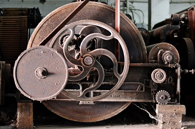
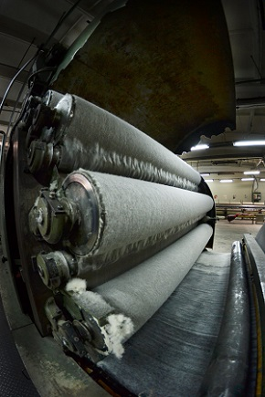

Istoric si prezentare generala a S.C. CARPATEX S.A. Brasov

Cu o istorie de peste 190 de ani, întreprinderea de stofe CARPATEX se înscrie printre cele mai renumite şi vechi fabrici textile din România.
Fondată în 1823, de un inginer german Otto Scherg, condusă timp de 120 de ani de aceeaşi familie, parcurgând etape succesive de reprofilări şi modernizări în perioada 1945-1989, fabrica de stofe din Braşov este actualmente un reper textil important pentru industria românească.
Societatea Comercială S.C. CARPATEX S.A. este in present persoană juridică română, cu capital integral privat, constituită ca societate pe acţiuni în anul 1990 prin H.G. nr. 1254/1990, prin preluarea întregului patrimoniu a fostei Întreprinderi de Stofe din Braşov.
Profilul acesteia este, în principal, producerea şi comercializarea ţesăturilor din lână si tip lana: lana cardată (80%) in amestec cu poliamida (nylon, 20%) sau 100 % lana, destinate confecţiilor atât pentru bărbaţi cât şi pentru femei si copii pentru sezonul toamna - iarna.
Fabrica are propria sa filatură cardată, secţie de ţesătorie şi finisaj. Societatea Carpatex dispune de personal de înaltă specializare şi de tehnică de fabricaţie modernă. Echipamentele de fabricaţie au fost achiziţionate de la firme de renume în acest domeniu: Sulzer, Nuovo Pignone, Savio, Sperotto Rimar, Krantz, Comet, Mario Crosta, TMT etc. Bazate pe tehnologii de ultima oră, finisajele includ tratamente speciale, cum ar fi: antipilling, emoliere (tuseu soft), apretare (tuseu hard), teflonare, tratamente KD etc.
Firma se bucură de un bun renume ca producător de ţesături de lână de înaltă clasă. Tradiţia firmei şi calitatea corespunzătoare a produselor sale duc la ocuparea unei poziţii bune pe piaţa internă şi pe cea externă. Peste 85% din producţia realizată este destinată exportului. Întreaga producţie are la bază creaţia efectivă a sortimentelor în cadrul firmei.
Obiectivele societăţii sunt: creşterea permanenta a calităţii produselor realizate şi să menţină pieţele externe actuale reprezentate de clientii sai din Japonia - Sumitex, Franţa – Naf Naf, Anglia, Danemarca, Suedia, Norvegia, Rusia etc.
Carpatex participa permanent, prin intermediul specialistilor sai, la targuri si expozitii internationale, cum ar fi TEX WORLD PARIS, unde produsele sale sunt foarte apreciate.

De peste 15 ani, societatea Carpatex a fondat propria fabrica de confectii / imbracaminte: SC ROCAS TRADING SRL care produce: paltoane si sacouri pentru femei si barbati, blazere, pantaloni si fuste pentru femei, imbracaminte pentru copii.
Clientii cei mai cunocuti sunt: NN07 Danemarca, Stockholm Konfections Suedia, Mousqueton Franta, Blue Comme Gris Franta, La Redoute Franta, Yorkshire Anglia, Bon Point Franta etc.
Fabrica de confectii este echipata cu masini de cusut Brother si masini Indupress pentru calcare-finisare. Pentru modele si incadrari intreprinderea ROCAS poseda sistemul OPTITEX, compatibil cu toate celelalte sisteme similare de incadrari.
De-a lungul timpului s-au construit colaborari pe termen lung cu clientii traditionali ai fimei Rocas.
Societatea Carpatex este amplasata intr-o zona ultra-centrala a orasului Brasov fapt pentru care a dezvoltat cu mare succes activitatea de imobiliare prin inchirierea de spatii: birouri clasa A, spatii industriale, comerciale si de agrement, realizand in ultimii ani un bogat portofoliu de clienti: Hiperdia Brasov, CCC Bucuresti, Greve, Zoomania, Bibas, Anturaj, Café Ritmo etc. Platforma Carpatex este dotata si cu largi spatii de parcare care faciliteaza accesul si stationarea autovehiculelor. De asemenea spatiile inchiriate si cele cere vor fi puse la dispozitia potentialilor clienti beneficiaza de toate utilitatile necesare desfasurarii oricarui tip de activitate (apa + canalizare, energie electrica si termica, gaze naturale, aer conditionat, paza 24 h etc.).